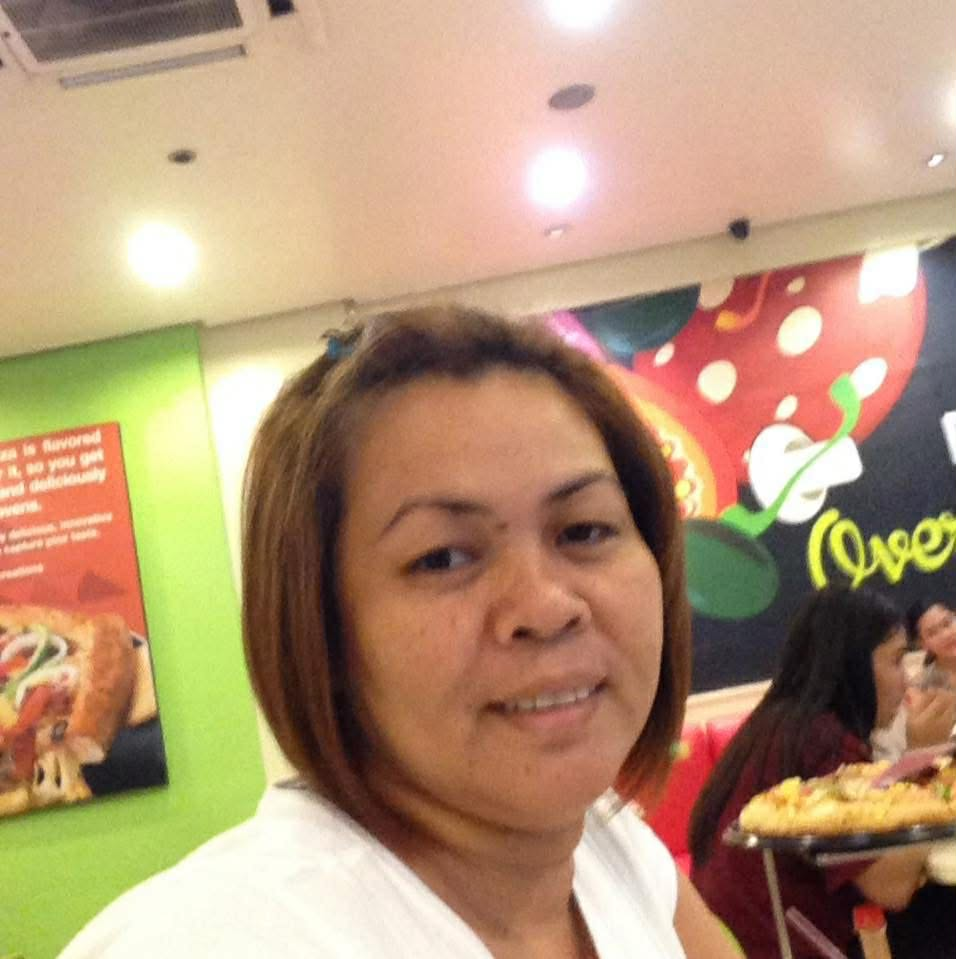

EXECUTIVE_OFFICER
TESS
The Heart & Navigator
STATUSACTIVE / CORE
ORIGINEST. 1995
The emotional anchor of the expedition. Her wisdom and nurturing spirit keep the family unified and moving toward the light, regardless of the terrain.
Navigator's Archive
